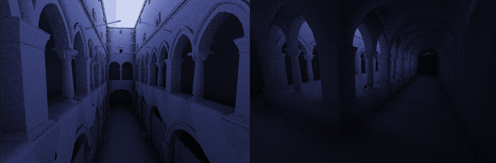
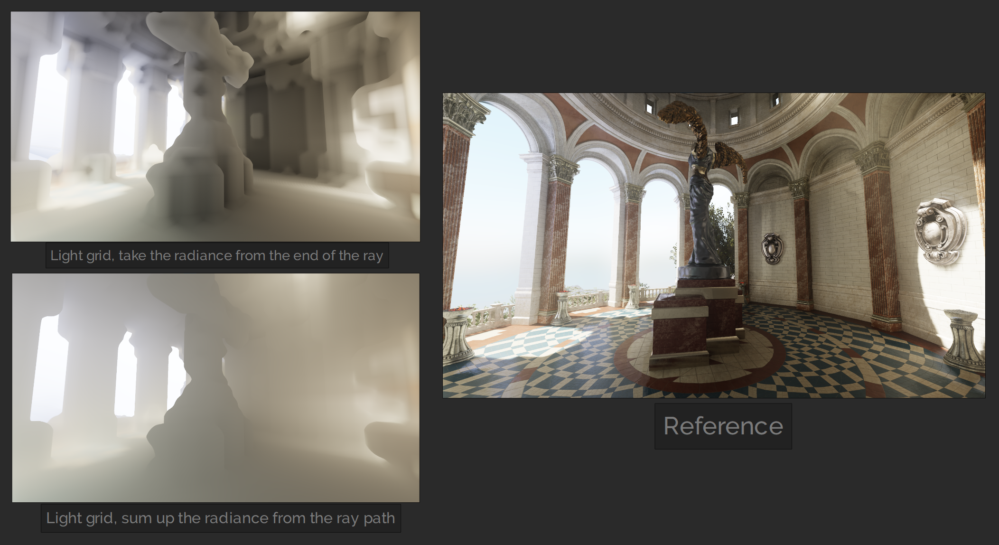
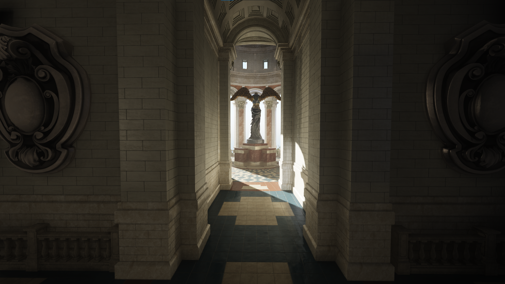

PBR renderer with real-time GI
Final showcase of the renderer using the Sun Temple scene
My goal for this project was to get more familiar with Vulkan and modern rendering techniques and to build a polished and pretty renderer. In the past, I had experimented with graphics and shader programming, but never really made anything polished, and I really wanted to put my learnings together.
After I got a triangle up and running, I started writing a graphics abstraction layer to make iteration and dealing with Vulkan easier. I continued to iterate on it as I started adding more features, such as texturing and 3D model loading. I researched physically based rendering techniques as I implemented simple physically based environment lighting. This was a big milestone!
 Physically based rendering with image-based lighting. I published the code for this on Github.
Physically based rendering with image-based lighting. I published the code for this on Github.
For loading textured fbx files, such as the sun temple, I started using Assimp and DDSPP. For organizing the draw calls, I kept it simple and split the scene into N descriptor sets / draw calls, N being the number of materials in the FBX file. To give more power to the post-processing shaders, I added a G-buffer for the base-color, normal, occlusion-roughness-metallic and emissive channels. I added a directional sunlight that uses a 2048x2048 depth map for shadow mapping. I'm using a `samplerShadow` in GLSL for percentage-closer filtering and use 4 shadow map samples in a rotated-square pattern as I found it gives the nicest look.
I also implemented bloom. It's a sun temple after all! I followed the article Physically Based Bloom for reference. It was looking nice, but there were lots of bright pixels, or "fireflies" here and there even after I implemented weighted averaging as suggested for reducing them. So, my dumb solution for now was just to limit the dynamic range of the first downsample pass using `value = min(value, vec3(1));`. From my testing, this gives a nicer result than the suggested methods.
Lighting is important, and having indirect lighting can make a big difference. Unfortunately, computing indirect lighting / global illumination efficiently and accurately is a difficult and open research problem. One common solution is lightmaps, but they don't work well with moving geometry. My idea was to voxelize the scene into a 3D texture (like in VXGI) each frame and marking each voxel with either a radiance value or a colored "wall" voxel (using the alpha channel to separate them), and to run a compute shader to flood light around it each frame. The light would then softly propagate from a light source (either a light-entity or an emissive surface), and slowly fade away in the distance creating areas of darkness. Typically with VXGI, a floor inside of a dark room might incorrectly catch light from the outside due to a cone trace going through walls. This wouldn't happen with my light flooding simulation idea as long as the wall is represented in the voxel texture.
First, I made an experiment in 2D:
It was looking promising, so I took it to 3D:
It was noisy, but it was working! In the above pictures and the final demo, I'm using a resolution of 128x128x128 for the light grid which covers the entire world.
It then added the code into the main renderer. I made the voxelization shader calculate a direct lighting value using the sun depth buffer and write it into the light grid. This means that the spots where the sun hits are a source of light for the flooding stage. In the following image, you can see the light grid visualized by ray tracing into it. For rough reflections and ambient light, it can be useful to not trace all the way, but to accumulate light on the path as if it was fog. This reduces noise since there is less variation between the directions. You can see the "foggy" version on the bottom.
For sampling the light grid in the main pixel shader, my idea was to shoot screen-space rays and use the depth buffer for small-scale details, as the voxel light grid is very coarse and isn't enough to give good results. Using a low-frequency noise function for deciding sampling direction helps a lot, as well as temporal anti-aliasing. I ended up going with interleaved gradient noise due to its natural look. It's not perfect as it introduces some bias (e.g. see the dark spots on the wall in the middle of the image). As an extra optimization / noise reduction idea for the future, the rays could be sent in half or quarter resolution upscaled using an edge-aware blur.

Implementing the ray sampling function that partly used screen-space information was tricky, as it always felt like there were some bright spots or light leaks coming from somewhere, or dark splotches of over-occlusion. Just relying on the depth-buffer is not enough information to be confident to know when the ray hits a surface, because you can't ask how deep some surface point in the depth buffer is. I realized that I could utilize my 3D light grid once again check for that, which helped reduce some artifacts. In the end, I got it to a presentable state, which I'm happy about!
Throughout this process, a big help has been that I implemented shader hotreloading early on. It's so much easier to play around and try new things. Starting small in 2D and making my rendering experiments first in their own demos was also helpful. It made debugging and experimenting on those specific things easier, without worrying about all the other features that would be required in the full version. Overall, this project has taught me a lot about graphics programming and Vulkan and has been fun to work on!
